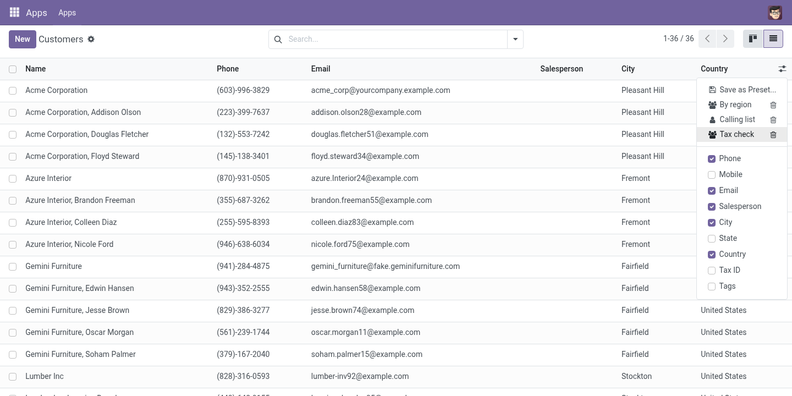
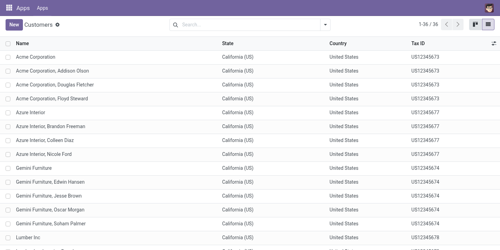
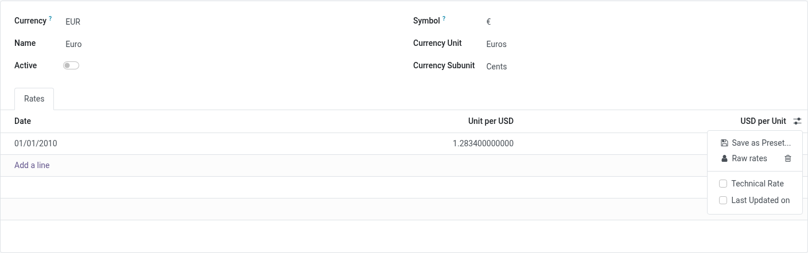
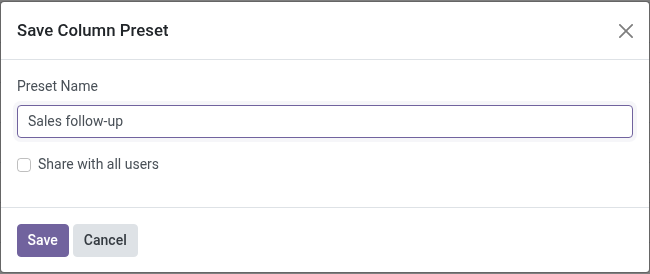

Odoo lets you pick which optional columns a list shows, but it keeps only one choice per list. Column Presets saves your choices under a name, so you switch between them in one click instead of ticking columns again.
Odoo 17.0 Community & Enterprise Free · LGPL-3

Saved presets sit at the top of the list's column menu, above the usual column checkboxes.

One click on Tax check: the list shows exactly the columns saved in it.
A preset turns on its columns and turns off the other optional ones. Odoo remembers the result, as if you had ticked the columns yourself.
Every user saves their own presets. Nobody else sees them.
Users in the Manage Shared Column Presets group save presets for the whole company. Everyone can use them; only that group can delete them.
Order lines, invoice lines, rates: any list inside a form that has optional columns gets the same menu.
The bin icon next to a preset deletes it after you confirm. It shows only on presets you may delete.
Every saved preset, with its owner and model, in Settings › Technical › User Interface (developer mode).

A list inside a form, here a currency's rates, with its own presets.

Save as Preset: a name, and for the shared-presets group, a box to share it.
Free and open source (LGPL-3) by Paulius Gaizauskas · Questions or bugs: GitHub issues